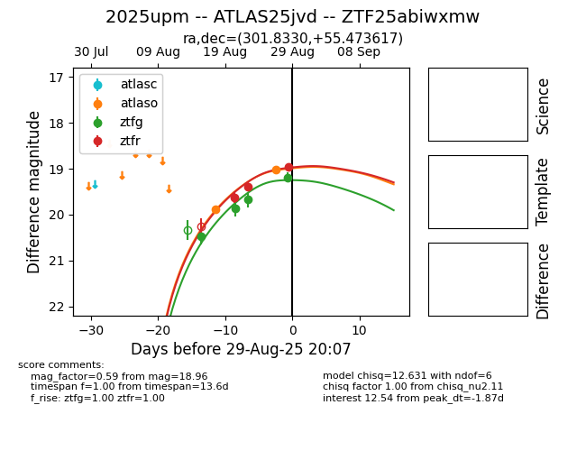

Target 2025upm at 2025-08-26 20:27, see:
FINK: fink-portal.org/ZTF25abiwxmw
Lasair: lasair-ztf.lsst.ac.uk/objects/ZTF25abiwxmw
ALeRCE: alerce.online/object/ZTF25abiwxmw
TNS: wis-tns.org/object/2025upm
YSE: ziggy.ucolick.org/yse/transient_detail/2025upm
alt names
ZTF25abiwxmw (ztf,fink)
2025upm (tns,yse)
ATLAS25jvd (atlas)
coordinates:
equatorial (ra, dec) = (301.8330,+55.47362)
galactic (l, b) = (89.6734,+12.21978)
photometry
last atlaso=19.89, ztfg=19.68, ztfr=19.40
1 atlaso, 3 ztfg, 2 ztfr detections
